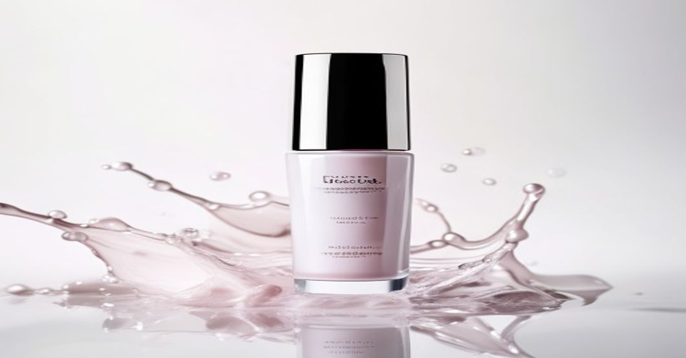

The quest for radiant, youthful skin often leads us to explore advanced dermatological treatments. Among the myriad of options available, the iS Clinical Active Peel System has emerged as a professional-grade solution designed to deliver remarkable results from the comfort of your own home. This innovative two-step system is meticulously formulated to provide a comprehensive skin resurfacing experience, targeting a range of concerns from dullness and uneven texture to fine lines and hyperpigmentation. It’s engineered for those who seek the transformative power of a clinical peel without the associated downtime, offering a sophisticated blend of botanical extracts and powerful acids to rejuvenate the complexion. If you're ready to experience a new level of skin clarity and smoothness, you can Buy Now on Amazon.
The iS Clinical Active Peel System distinguishes itself through its innovative two-step approach and a carefully curated blend of pharmaceutical-grade ingredients. Unlike many single-step peels, this system is designed to provide a balanced and effective treatment, delivering potent active ingredients while also soothing and hydrating the skin. It’s a testament to iS Clinical’s commitment to combining scientific innovation with botanical wisdom.
| Feature | Benefit |
|---|---|
| Two-Step System (Step 1 & Step 2) | Step 1 provides powerful exfoliation and resurfacing, while Step 2 neutralizes, hydrates, and rejuvenates, ensuring a balanced and comfortable treatment with optimized results. |
| Proprietary Blend of Acids | Includes a precise combination of Glycolic, Lactic, Salicylic, and Citric Acids to target multiple skin concerns simultaneously, from exfoliation to pore refinement and brightening. |
| Botanical Extracts | Infused with potent botanical ingredients like Bilberry Extract, Mushroom Extract, and Licorice Root Extract which provide antioxidant protection, soothing benefits, and enhance skin clarity. |
| Professional-Grade Results | Formulated to deliver the efficacy typically associated with in-office treatments, providing visible improvements in skin texture, tone, and radiance without significant downtime. |
| Targeted Action | Addresses a broad spectrum of concerns including fine lines, wrinkles, uneven skin tone, rough texture, and blemish-prone skin, making it a versatile solution for many. |
| Non-Irritating Formulation |